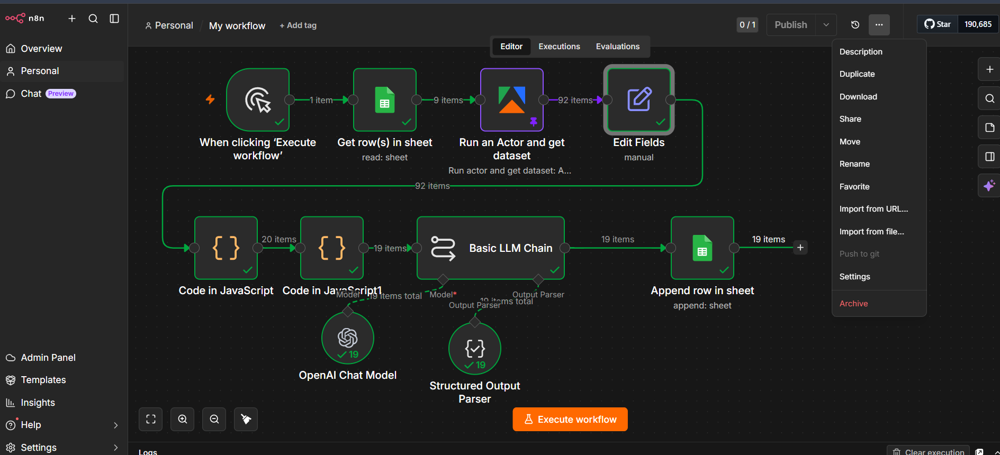

An optimized, serverless n8n system built to extract, normalize, and visually decode viral consumer psychology triggers in the D2C Dog Food industry.
Standard scraping outputs are fundamentally skewed. Reels and video formats dominate public metrics, completely hiding high-performing static strategies.
A fully decoupled, event-driven data flow running on self-hosted Railway server infrastructure. All nodes compile and pass state successfully.

By using Apify's Instagram Scraper, the pipeline completely circumvents Meta's aggressive account checkpoint blocks. By executing public-only, cookieless scrapers routed through thousands of residential rotating proxies, Meta sees legitimate, decentralized traffic requests.
To find posts that genuinely resonated, the pipeline runs a weighted engagement formula via an inline JavaScript node.
Instead of counting a passive view equal to an active click, the formula scales values based on user intent and friction. A click to comment requires much more friction than a double-tap to like.
Sorting purely by raw popularity score would completely bury static image ads under viral video view counts. To prevent this, the second JavaScript node splits incoming assets into separate silos based on the presence of a video payload.
By evaluating the top 10 videos against videos, and the top 10 carousels against carousels, the downstream AI is guaranteed a perfectly balanced diet of visual strategies to analyze.
Meta's CDN links contain temporary security tokens that expire within 24 hours. To bypass the slow, costly process of downloading binary images into n8n's memory, the pipeline dynamically extracts a flat imageUrl variable immediately after scraping.
By passing this active, live web link straight into the text prompt payload, gpt-4o-mini's vision model reads the image directly from Meta's servers, interpreting text overlays and creative layouts without any local storage friction.
Standard LLM text outputs are impossible to parse into database rows. We use a JSON schema to enforce strict database columns.
The connected Structured Output Parser node acts as a hard physical mold. It forces the LLM's raw reasoning to output as a flat JSON dictionary containing exactly 6 keys, stripping away all conversational preamble.
A raw database filled with sprawling AI text blocks, massive Meta links, and raw engagement counts quickly turns into an unreadable mess. To establish a clean visual hierarchy, we built a custom Google Apps Script makeover engine.
By executing this script, the spreadsheet instantly formats with Roboto typography, a frozen charcoal header row, clean zebra-striping, and a uniform 45px row height limit that wraps text beautifully.
By running our weighted popularity algorithm in native JavaScript on n8n *before* hitting the LLM gateway, we cut down 92 raw scraper items to exactly the 20 highest-signal viral anomalies. This pre-filtering step reduces OpenAI API token consumption by a massive 79% per execution run.
| Hook Category | User Persona Target | Psychological Trigger Used |
|---|---|---|
| anxiety_safety_alert | Anxious/Skeptical Parent | Ingredients transparency, toxics alert, raw food safety. |
| product_comparison_dupe | Comparative Researcher | Kibble vs. Fresh Food showdowns, brand-to-brand cost dupes. |
| scientific_vet_verification | Evidence-Based Buyer | Clinical trials, expert veterinarian seals of approval. |
| value_budget_optimization | Price-Conscious Optimizer | Cost-per-meal breakdowns, premium kibble toppers hacks. |
| fussy_eater_problem_solver | Frustrated Caregiver | Palatability excitement, raw transition guides, sensitive gut fixes. |
A demonstration of clean data strategy, cost optimization, and anti-fragile automation pipelines in the premium D2C Pet Care ecosystem.